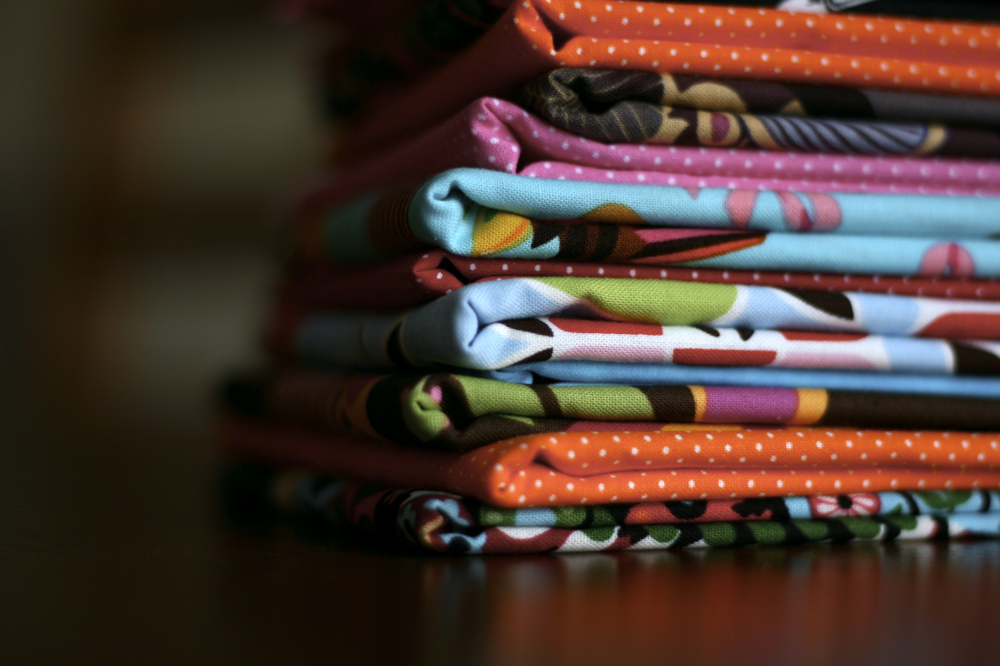
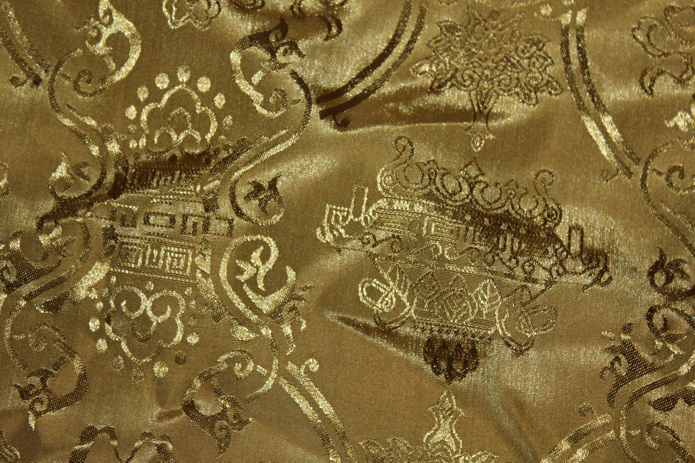
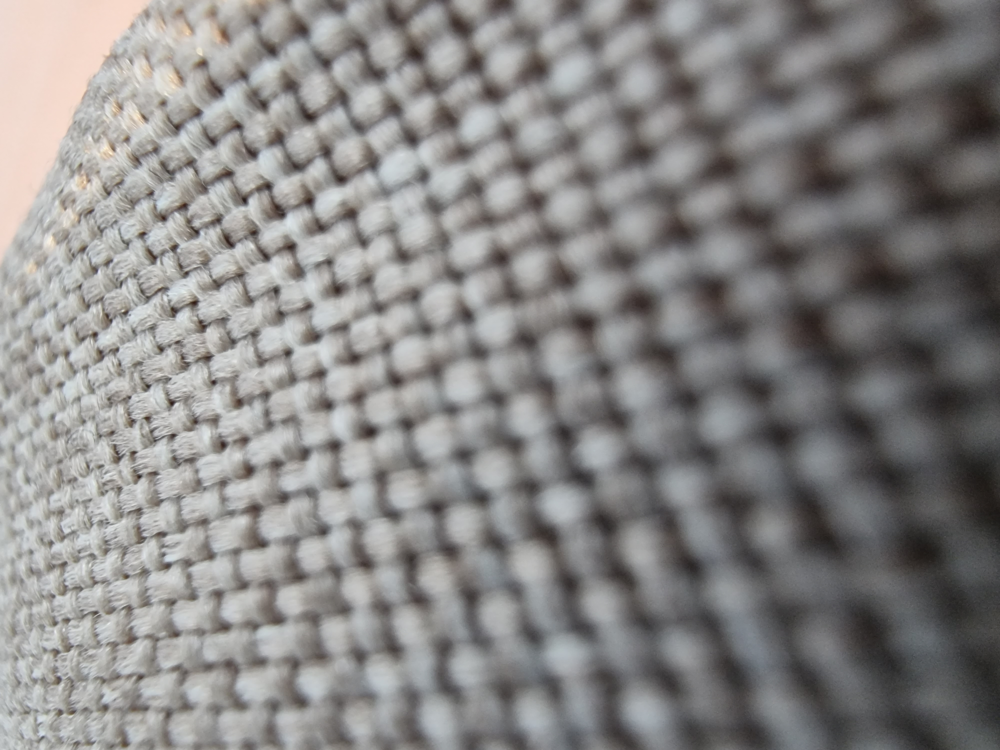
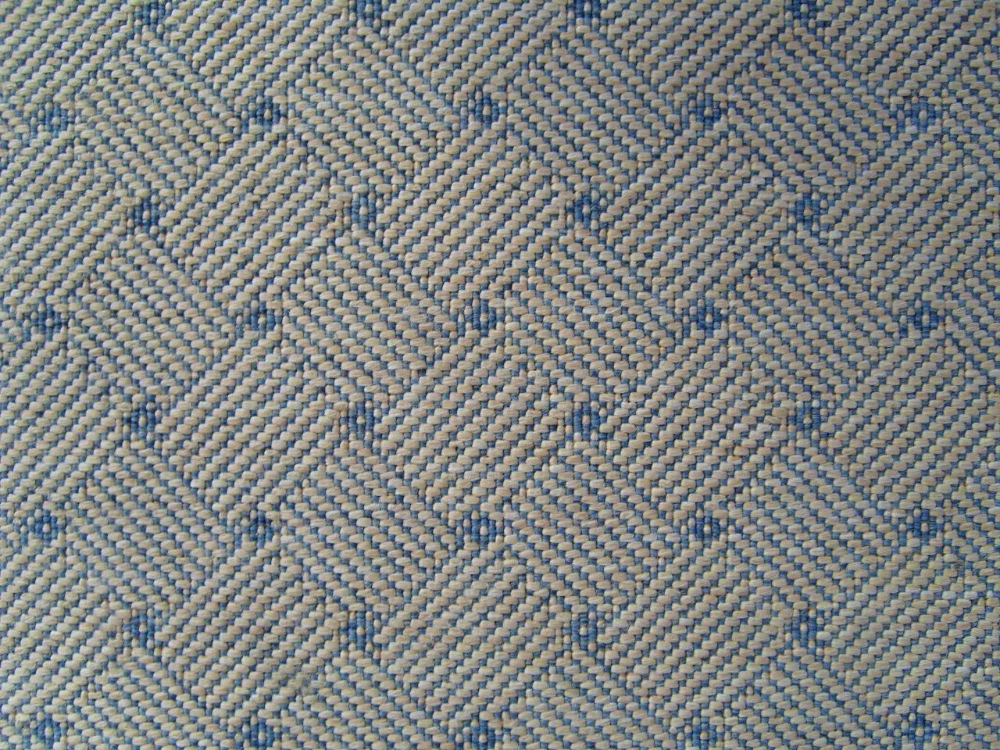
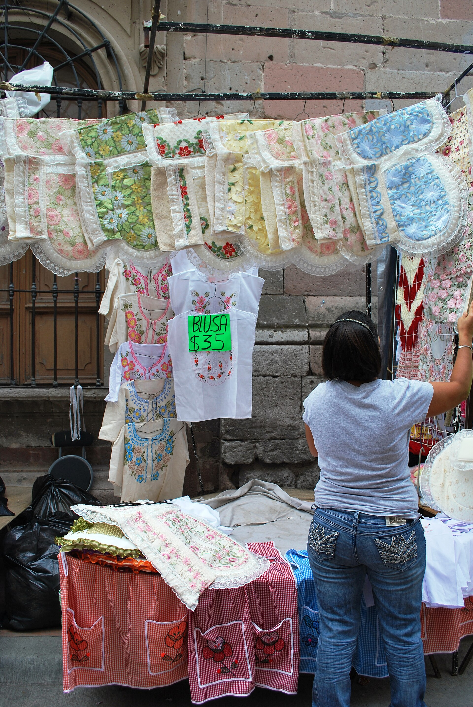

Material Detail
The business language stays practical. The presentation now feels premium.
Focused visuals and motion help the textile identity feel more intentional and high-value.
Textile Focus
Mantrix keeps its profile centered on textile sourcing, supply coordination, and responsive trade communication, now framed inside a more premium and high-end digital presentation.


Material Detail
Focused visuals and motion help the textile identity feel more intentional and high-value.
Trading Support
Supporting textile product sourcing requirements through a more composed and confidence-building trade profile.
Helping structure supply discussions for distribution, trade continuity, and practical commercial movement.
Keeping conversations direct, responsive, and appropriately polished for business-to-business engagement.

Market Perspective
The upgraded design brings more atmosphere to the textile story while keeping the message commercially grounded: dependable sourcing, steady communication, and long-term credibility matter.
Textile Gallery

Material Perspectives
These extra visuals deepen the textile story with more color, texture, and trade character across the page.

Contact Mantrix
Use the upgraded contact flow to send a direct inquiry or review the company story for a fuller business picture.